web2 находятся необходимые файлы: file.tar.gz, image.png, index.php, скриншоты и др.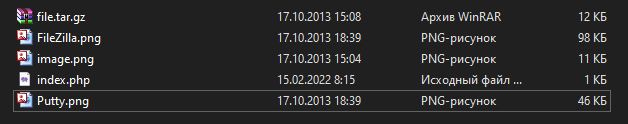
git init git add . git commit -m "first commit" git branch -M main git remote add origin https://github.com/Valeria1445/web2.git git push -u origin main
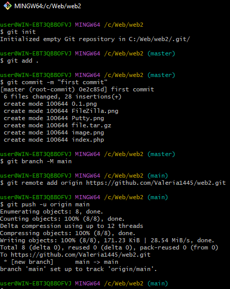
git clone git@github.com:Valeria1445/web2.git mkdir -p ~/www/w2 cp -r ~/web2/* ~/www/w2/
~/www/w2.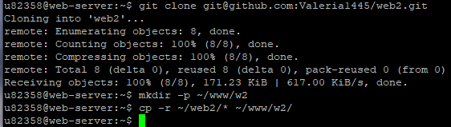
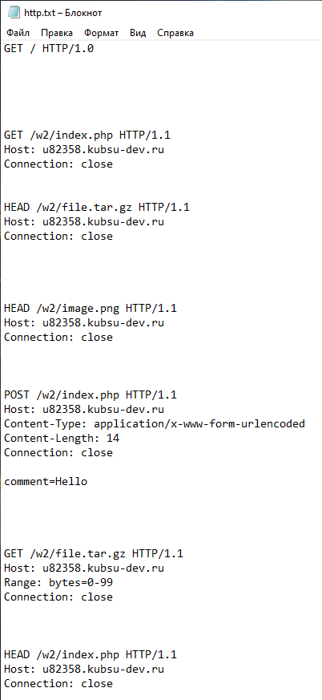
u82358.kubsu-dev.ru, порт 80.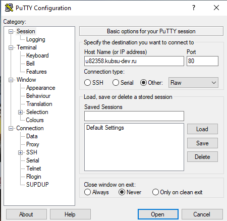
GET / HTTP/1.0
Запрос корневой директории. Сервер возвращает стандартную страницу Apache (так как в корне нет индексного файла).
Результат (скриншот 1.png):
HTTP/1.1 200 OKServer: Apache/2.4.58 (Ubuntu), Content-Length: 10671, Content-Type: text/html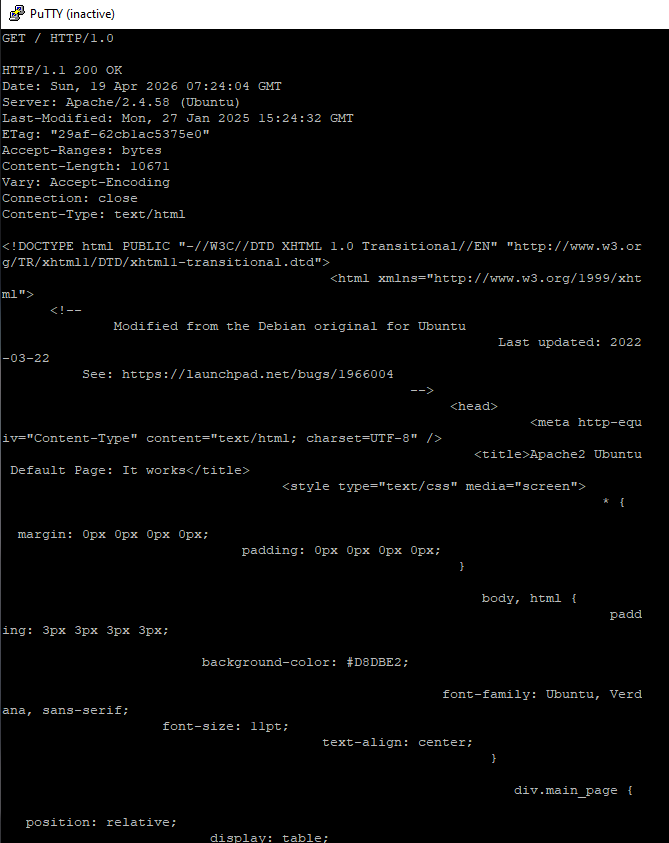
GET /w2/index.php HTTP/1.1 Host: u82358.kubsu-dev.ru Connection: close
Запрос index.php из каталога /w2/. Скрипт возвращает статус 404 (задано в коде преподавателем), но выводит данные.
Результат (скриншот 2.png):
HTTP/1.1 404 Not FoundContent-Type: text/html; charset=UTF-8Array ( ) Привет, мир!Статус 404 не мешает анализу содержимого.
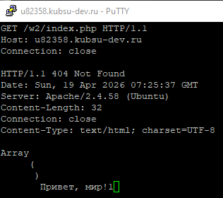
HEAD /w2/file.tar.gz HTTP/1.1 Host: u82358.kubsu-dev.ru Connection: close
Метод HEAD возвращает только заголовки. Позволяет узнать размер из поля Content-Length.
Результат (скриншот 3.png):
HTTP/1.1 200 OKContent-Length: 11335 байтapplication/x-gzip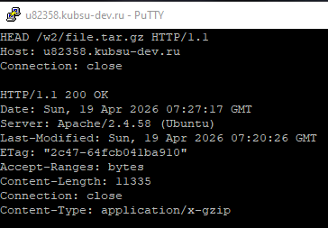
HEAD /w2/image.png HTTP/1.1 Host: u82358.kubsu-dev.ru Connection: close
Аналогично пункту 3, определяем MIME-тип изображения.
Результат (скриншот 4.png):
HTTP/1.1 200 OKContent-Type: image/pngContent-Length: 10506 байт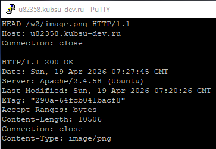
POST /w2/index.php HTTP/1.1 Host: u82358.kubsu-dev.ru Content-Type: application/x-www-form-urlencoded Content-Length: 14 Connection: close comment=Hello
Отправка POST-данных (имитация формы). Скрипт возвращает статус 404, но выводит массив $_POST.
Результат (скриншот 5.png):
HTTP/1.1 404 Not FoundArray ( [comment] => Hello ) Привет, мир!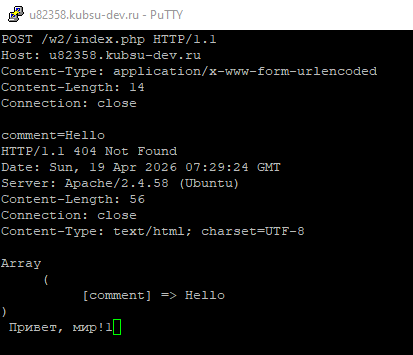
GET /w2/file.tar.gz HTTP/1.1 Host: u82358.kubsu-dev.ru Range: bytes=0-99 Connection: close
Заголовок Range запрашивает только указанный диапазон байт (первые 100).
Результат (скриншот 6.png):
HTTP/1.1 206 Partial ContentContent-Range: bytes 0-99/11335Content-Length: 100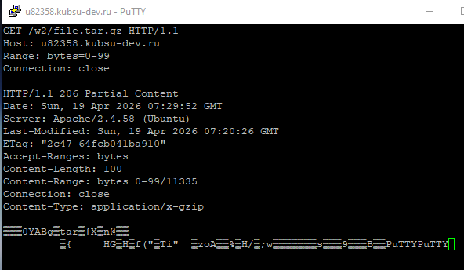
HEAD /w2/index.php HTTP/1.1 Host: u82358.kubsu-dev.ru Connection: close
Запрос HEAD для получения заголовков. Кодировка указана в поле Content-Type.
Результат (скриншот 7.png):
HTTP/1.1 404 Not FoundContent-Type: text/html; charset=UTF-8 – кодировка UTF-8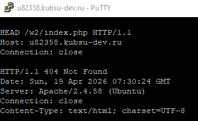
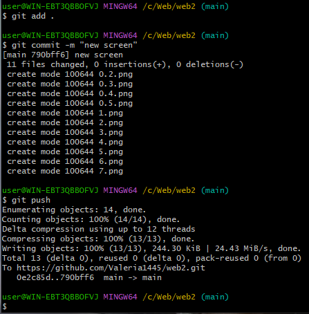
git pull и повторное копирование в ~/www/w2.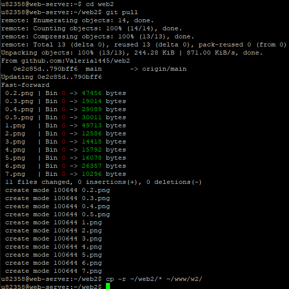